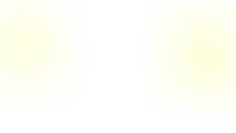

Всё подорожало разом
Материалы +15–50%, зарплаты врачей +10–15% в год, льготные взносы отменили, в цену заложен НДС 22%. Выручка — не выросла.

Принесёт без рекламного бюджета
Сначала смотрите, потом решаете. Никто не будет звонить без спроса.
14 направлений АМДЦ, по которым вас пока не найти в поиске
Где вы сейчас
Аренда, зарплаты, материалы и налоги выросли разом, а новые пациенты приходят реже. В начале 2026 года падение спроса отметили 79,5% стоматологий. Остаться в яме — или войти в те 8%, у кого прибыль осталась?
Материалы +15–50%, зарплаты врачей +10–15% в год, льготные взносы отменили, в цену заложен НДС 22%. Выручка — не выросла.
Прайс подняли меньше, чем выросли расходы, а администратор всё чаще слышит «у соседей дешевле».
Сарафан ослаб. Имплантацию, протезы и брекеты переносят «до лучших времён».
Человек сравнивает 5–10 клиник и уходит туда, где понятнее, за что платить.
Меньше заработали — нечем привлекать, привлечение подорожало вдвое — снова скидка.
Из пяти соседей идут не к лучшему, а к тому, кто понятнее показал себя ещё до звонка.
Врачи, метод, гарантии и состав суммы видны заранее — поднятый прайс не пугает.
У каждого из 14 направлений своя страница с теми словами, которые люди набирают.
Поток включают, когда в расписании дыра, и гасят, когда плотно. Скидка — больше не единственный рычаг.
Отзывы, врачи, случаи и лицензии — на своём адресе, а не на чужих площадках. Навсегда.
Потери
Девять строк слева — где вы сейчас. Девять строк справа — где окажетесь, когда у клиники появится своя страница.
По запросу «уролог площадь мужества» открываются чужие каталоги, где вы стоите рядом с девятью конкурентами.
У каждой услуги своя страница с теми словами, которые люди набирают. В выдаче вы сами, без соседей рядом.
Карточку открывают 420 человек в месяц, а звонить готовы двое из десяти. Остальные не находят кнопку «Записаться».
Форма на каждой странице: врач и время выбираются без звонка, заявка приходит в WhatsApp регистратуры.
Сколько стоит приём и кто принимает — только по телефону. Выбирают того, у кого цена написана.
Прайс открыт, у каждого врача карточка с опытом. Разговоров «просто узнать» становится меньше.
Яндекс Директ требует страницу с услугой и ценой. Без неё канал закрыт целиком.
У каждой услуги посадочная страница: поток включается в нужный день и гасится, когда расписание заполнено.
На площадке выбирают по звёздам и цене — не глядя, кто из вас работает двадцать четыре года.
На своей странице рядом нет ни одного конкурента. Сравнивают не с соседом, а с тем, за чем пришли.
У соседки 196 оценок, у вас 28 — не потому, что лечите хуже: отзыв оставляет тот, кто смог записаться.
Отзывы, врачи, лицензии и случаи — на одной странице. Их никто не перемешивает с соседскими.
После 20:00 и в выходные никто не отвечает. Человек открывает следующую клинику, и вы об этом не узнаете.
Ночью, в выходные и праздники страница отвечает и записывает. Утром — список заявок, а не догадки.
Часть людей смотрит документы до записи. В карточке справочника номера лицензии нет — и они уходят.
Отдельная страница с лицензией, допусками врачей и оборудованием. Проверяют у вас — и остаются.
«Сколько стоит», «кто в субботу», «как доехать» — весь день одно и то же, а кто-то в это время не дозванивается.
Прайс, подготовка к анализам, часы и проезд отвечают сами. Разговоры короче и по делу.
Сайт и площадки
Яндекс Карты, 2ГИС и медицинские порталы приводят к вам 420 человек в месяц — уходить оттуда не нужно. Но площадка зарабатывает на вас: продаёт место в списке и берёт процент с записи. Положите на весы, что остаётся вам там, а что — на своём сайте.
3 000–30 000 ₽ в месяц за приоритет. Перестали — карточка уходит вниз.
Портал берёт 3,7% — даже когда пациент пришёл второй раз.
Позвать его на осмотр через полгода вы не сможете.
Площадка показывает их прямо в вашей карточке.
Какие отзывы показать и кого поднять выше, решает её алгоритм.
Домен и хостинг — несколько тысяч ₽ в год. Снять с показа не может никто.
0 ₽ с первой, сотой и повторной заявки.
Имя, телефон и услуга приходят вам. Через полгода пригласите на осмотр.
Ни чужих клиник, ни чужой рекламы. Выбирают между вашими врачами.
Врачи, цены, отзывы, акции — решаете сами. Сменится подрядчик — сайт останется.
Тарифы — из открытых прайсов площадок, сентябрь 2026. Бросать справочники не нужно: пусть приводят людей и дальше. Сайт нужен, чтобы пациент, которого они привели, остался вашим.
Что даёт сайт · 7 результатов
Проверка
Вслух не нужно, мне — тоже. Если хотя бы на один ответа нет, он уже стоит вам денег.
Откройте вопрос и отметьте честно: есть ответ или нет.
Без своей страницы этот поток не виден нигде: Метрики нет, считать нечего. Сайт превращает его из догадки в цифру.
Сегодня — нигде. А выбирают того, у кого цена написана, а не того, кто лечит лучше.
На площадке — её алгоритм и тот, кто заплатил за приоритет. На своём адресе — только вы.
Директу нужна страница с услугой и ценой. Без неё канал закрыт, сколько бы вы ни были готовы вложить.
Регистратура закрыта с 20:00. Человек открывает следующую клинику в списке — и вы об этом не узнаете.
Сейчас — на четырёх чужих площадках вперемешку с соседями. Целиком их не видно нигде.
Ни один из шести вопросов не про качество лечения. Все шесть — про то, что человек может узнать о клинике до того, как впервые вам позвонил.
Кому подойдёт
Это не список достоинств, а проверка на совпадение: узнали свою клинику хотя бы в одном пункте — расчёт ниже уже про вас.
Сайт не лечит и не нанимает — он приводит людей. Шестнадцать записей в месяц первыми заполняют пустые часы.
Пустое окно уже оплачено арендой и зарплатой.
Каталог берёт помесячно за строчку и процент с каждой записи. Заявка со своей страницы не стоит ничего: сто заявок обходятся как одна.
За место платят каждый месяц, страницу покупают один раз.
Яндекс Директ требует страницу с описанием услуги и ценой — без неё канал закрыт целиком. Со страницей поток включается в тот день, когда он нужен.
Реклама без посадочной — деньги, уведённые в чужой каталог.
В справочнике клиника — одна строка на все услуги: кто ищет уролога, видит стоматологию и уходит. 14 направлений — это 14 разных запросов, и каждому нужна своя страница со своей ценой.
Чем шире клиника, тем дороже ей обходится одна строчка в чужом списке.
А если окон в расписании нет и потока из справочников вам хватает — сайт подождёт. Я скажу это прямо, не дожидаясь вашего вопроса.
Соседи
Один сидит в вашем доме, второй — в соседнем. Снимки сделаны 13 сентября в окне 1280 пикселей: так эти страницы видит человек с ноутбука.
 4,9 · 196 оценок
4,9 · 196 оценок 5,0 · 139 оценок
5,0 · 139 оценокул. Орбели, 19 · 24 года работы · 14 направлений · ни адреса, ни цен, ни врачей, ни кнопки записи
Ни одна из их сильных сторон не про деньги и не про качество лечения. Всё это человек может сделать на их странице — и не может на вашей.
Технология · 8 шагов
Первые пять дней работаю бесплатно и без договора. Остановиться можно между любыми двумя шагами.
Сколько людей в вашем районе ищут ваши услуги — и куда они уходят сейчас.
Собираю сам, из ваших карточек и регистратуры — от вас ничего не нужно.
Не описание словами, а рабочая страница, которую можно открыть и пролистать.
Смотрите на конкретную страницу и говорите «да» или «нет».
Всё оформляется на вашу компанию, а не на подрядчика.
Вручную, без конструкторов и готовых тем.
Сайт уходит в работу, и с первого дня видно, что он приносит.
Последний документ, а не первый.
Остановиться можно между любыми двумя шагами, без объяснения причин: домен, тексты и макеты к этому моменту уже ваши.
Ваши цифры
Поставьте свои значения — результат справа пересчитается сразу.
Исходные данные
6% посетителей записываются со страницы с ценой и кнопкой
Сайт принесёт в первый месяц
+105 477 ₽
и столько же каждый следующий — 1 265 725 ₽ за год
0 ₽ приносит своя страница сегодня
В расчёте обе дороги: те, кто уже открыл вашу карточку, и те, кто ищет услугу в поиске и находит вас сам. Вторых поставлено девять в месяц — это заведомо мало: сегодня они уходят к тем, у кого есть страница с ценой.
Точные цифры лежат в вашем кабинете Яндекс Бизнеса — откроем на встрече и пересчитаем при вас. Доля 72,6% переходов с карточки — данные Яндекса по Петербургу.
Почему я
Не список достоинств, а четыре отличия, которые можно проверить до того, как вы заплатите первый рубль.
В агентстве страницу ведут менеджер, копирайтер, дизайнер и верстальщик — и на вопрос «почему так» каждый показывает на соседа. Здесь смыслы, тексты, дизайн и сборку делает тот же человек, с которым вы разговариваете.
За результат отвечаю на сто процентов.
У агентства два десятка сайтов, ваш — один из них, и правку вы ждёте до следующей планёрки. Я беру не больше двух проектов и третий не возьму, пока не сдам первый.
Всё внимание — а не остаток чужого времени.
В счёте агентства лежат аренда, аккаунт-менеджер, планёрки и премия отдела продаж. Вы оплачиваете их вместе с сайтом, хотя вашу страницу эти люди ни разу не открывали.
Счёт состоит из работы — и больше ни из чего.
Конструктор отдаёт страницу за день, но вместе с ней — подписку, чужое имя в адресе и десяток лишних скриптов. Эта страница собрана вручную: нажмите Ctrl + U и посмотрите сами. Ваш сайт будет собран так же.
Проверка занимает десять секунд.
Ничего из этого не делает меня лучше агентства с отделом из восьми человек. У них мощность: десять сайтов в месяц, подмена на время отпуска, юрист в штате. У меня — два проекта, и вашу страницу от первой мысли до последней строки кода держит в голове один человек.
Эту страницу вы только что пролистали до конца. Так же будут листать и вашу — до кнопки «Записаться».
Забрать свой сайтРазница
Ни одна строка справа не про новых врачей, новое оборудование или новые деньги в рекламу. Это та же клиника — просто её стало видно.
Первый шаг · бесплатно
Бесплатно и без звонков. Договор, сроки и деньги обсуждаются только после того, как вы всё это увидите.
Заявка
Пришлю в WhatsApp через 4–5 дней. Материалов и доступов от вас не нужно.
Разрешение
Макет, список страниц и разбор запросов — четыре-пять дней моей работы, отданных до договора и до первого рубля. Посмотрите и скажите «нет», если не подойдёт: это нормальный ответ, и он ничего не испортит.
Мне полагалось поставить сюда ещё один экран с кнопкой и словами «последний шанс». Вместо него — голосовое. Включите, это минута.
Максим, автор этого предложенияГолосовое загружается отдельно — если не играет, напишите в WhatsApp, пришлю сразу.